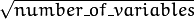

Random Trees¶
Random trees have been introduced by Leo Breiman and Adele Cutler: http://www.stat.berkeley.edu/users/breiman/RandomForests/ . The algorithm can deal with both classification and regression problems. Random trees is a collection (ensemble) of tree predictors that is called forest further in this section (the term has been also introduced by L. Breiman). The classification works as follows: the random trees classifier takes the input feature vector, classifies it with every tree in the forest, and outputs the class label that received the majority of “votes”. In case of a regression, the classifier response is the average of the responses over all the trees in the forest.
All the trees are trained with the same parameters but on different training sets. These sets are generated from the original training set using the bootstrap procedure: for each training set, you randomly select the same number of vectors as in the original set ( =N ). The vectors are chosen with replacement. That is, some vectors will occur more than once and some will be absent. At each node of each trained tree, not all the variables are used to find the best split, but a random subset of them. With each node a new subset is generated. However, its size is fixed for all the nodes and all the trees. It is a training parameter set to
 by default. None of the built trees are pruned.
In random trees there is no need for any accuracy estimation procedures, such as cross-validation or bootstrap, or a separate test set to get an estimate of the training error. The error is estimated internally during the training. When the training set for the current tree is drawn by sampling with replacement, some vectors are left out (so-called
oob (out-of-bag) data
). The size of oob data is about N/3 . The classification error is estimated by using this oob-data as follows:
- Get a prediction for each vector, which is oob relative to the i-th tree, using the very i-th tree.
- After all the trees have been trained, for each vector that has ever been oob, find the class-winner for it (the class that has got the majority of votes in the trees where the vector was oob) and compare it to the ground-truth response.
- Compute the classification error estimate as a ratio of the number of misclassified oob vectors to all the vectors in the original data. In case of regression, the oob-error is computed as the squared error for oob vectors difference divided by the total number of vectors.
For the random trees usage example, please, see letter_recog.cpp sample in OpenCV distribution.
References:
- Machine Learning, Wald I, July 2002. http://stat-www.berkeley.edu/users/breiman/wald2002-1.pdf
- Looking Inside the Black Box, Wald II, July 2002. http://stat-www.berkeley.edu/users/breiman/wald2002-2.pdf
- Software for the Masses, Wald III, July 2002. http://stat-www.berkeley.edu/users/breiman/wald2002-3.pdf
- And other articles from the web site http://www.stat.berkeley.edu/users/breiman/RandomForests/cc_home.htm
CvRTParams¶
-
struct
CvRTParams: publicCvDTreeParams¶ Training parameters of random trees.
The set of training parameters for the forest is a superset of the training parameters for a single tree. However, random trees do not need all the functionality/features of decision trees. Most noticeably, the trees are not pruned, so the cross-validation parameters are not used.
CvRTParams::CvRTParams:¶
The constructors.
-
C++:
CvRTParams::CvRTParams()¶
-
C++:
CvRTParams::CvRTParams(int max_depth, int min_sample_count, float regression_accuracy, bool use_surrogates, int max_categories, const float* priors, bool calc_var_importance, int nactive_vars, int max_num_of_trees_in_the_forest, float forest_accuracy, int termcrit_type)¶ Parameters: - max_depth – the depth of the tree. A low value will likely underfit and conversely a high value will likely overfit. The optimal value can be obtained using cross validation or other suitable methods.
- min_sample_count – minimum samples required at a leaf node for it to be split. A reasonable value is a small percentage of the total data e.g. 1%.
- max_categories – Cluster possible values of a categorical variable into
K
max_categoriesclusters to find a suboptimal split. If a discrete variable, on which the training procedure tries to make a split, takes more thanmax_categoriesvalues, the precise best subset estimation may take a very long time because the algorithm is exponential. Instead, many decision trees engines (including ML) try to find sub-optimal split in this case by clustering all the samples intomax_categoriesclusters that is some categories are merged together. The clustering is applied only inn>2-class classification problems for categorical variables withN > max_categoriespossible values. In case of regression and 2-class classification the optimal split can be found efficiently without employing clustering, thus the parameter is not used in these cases. - calc_var_importance – If true then variable importance will be calculated and then it can be retrieved by
CvRTrees::get_var_importance(). - nactive_vars – The size of the randomly selected subset of features at each tree node and that are used to find the best split(s). If you set it to 0 then the size will be set to the square root of the total number of features.
- max_num_of_trees_in_the_forest – The maximum number of trees in the forest (surprise, surprise). Typically the more trees you have the better the accuracy. However, the improvement in accuracy generally diminishes and asymptotes pass a certain number of trees. Also to keep in mind, the number of tree increases the prediction time linearly.
- forest_accuracy – Sufficient accuracy (OOB error).
- termcrit_type –
The type of the termination criteria:
- CV_TERMCRIT_ITER Terminate learning by the
max_num_of_trees_in_the_forest; - CV_TERMCRIT_EPS Terminate learning by the
forest_accuracy; - CV_TERMCRIT_ITER | CV_TERMCRIT_EPS Use both termination criteria.
- CV_TERMCRIT_ITER Terminate learning by the
For meaning of other parameters see CvDTreeParams::CvDTreeParams().
The default constructor sets all parameters to default values which are different from default values of CvDTreeParams:
CvRTParams::CvRTParams() : CvDTreeParams( 5, 10, 0, false, 10, 0, false, false, 0 ),
calc_var_importance(false), nactive_vars(0)
{
term_crit = cvTermCriteria( CV_TERMCRIT_ITER+CV_TERMCRIT_EPS, 50, 0.1 );
}
CvRTrees¶
-
class
CvRTrees: publicCvStatModel¶ The class implements the random forest predictor as described in the beginning of this section.
CvRTrees::train¶
Trains the Random Trees model.
-
C++:
CvRTrees::train(const Mat& trainData, int tflag, const Mat& responses, const Mat& varIdx=Mat(), const Mat& sampleIdx=Mat(), const Mat& varType=Mat(), const Mat& missingDataMask=Mat(), CvRTParams params=CvRTParams() )¶
-
C++:
CvRTrees::train(const CvMat* trainData, int tflag, const CvMat* responses, const CvMat* varIdx=0, const CvMat* sampleIdx=0, const CvMat* varType=0, const CvMat* missingDataMask=0, CvRTParams params=CvRTParams() )¶
-
C++:
CvRTrees::train(CvMLData* data, CvRTParams params=CvRTParams() )¶
-
Python:
cv2.RTrees.train(trainData, tflag, responses[, varIdx[, sampleIdx[, varType[, missingDataMask[, params]]]]]) → retval¶
The method CvRTrees::train() is very similar to the method CvDTree::train() and follows the generic method CvStatModel::train() conventions. All the parameters specific to the algorithm training are passed as a CvRTParams instance. The estimate of the training error (oob-error) is stored in the protected class member oob_error.
The function is parallelized with the TBB library.
CvRTrees::predict¶
Predicts the output for an input sample.
-
C++:
CvRTrees::predict(const Mat& sample, const Mat& missing=Mat() )const¶
-
C++:
CvRTrees::predict(const CvMat* sample, const CvMat* missing=0 )const¶
-
Python:
cv2.RTrees.predict(sample[, missing]) → retval¶ Parameters: - sample – Sample for classification.
- missing – Optional missing measurement mask of the sample.
The input parameters of the prediction method are the same as in CvDTree::predict() but the return value type is different. This method returns the cumulative result from all the trees in the forest (the class that receives the majority of voices, or the mean of the regression function estimates).
CvRTrees::predict_prob¶
Returns a fuzzy-predicted class label.
-
C++:
CvRTrees::predict_prob(const cv::Mat& sample, const cv::Mat& missing=cv::Mat() )const¶
-
C++:
CvRTrees::predict_prob(const CvMat* sample, const CvMat* missing=0 )const¶
-
Python:
cv2.RTrees.predict_prob(sample[, missing]) → retval¶ Parameters: - sample – Sample for classification.
- missing – Optional missing measurement mask of the sample.
The function works for binary classification problems only. It returns the number between 0 and 1. This number represents probability or confidence of the sample belonging to the second class. It is calculated as the proportion of decision trees that classified the sample to the second class.
CvRTrees::getVarImportance¶
Returns the variable importance array.
-
C++:
CvRTrees::getVarImportance()¶
-
C++:
CvRTrees::get_var_importance()¶
-
Python:
cv2.RTrees.getVarImportance() → retval¶
The method returns the variable importance vector, computed at the training stage when CvRTParams::calc_var_importance is set to true. If this flag was set to false, the NULL pointer is returned. This differs from the decision trees where variable importance can be computed anytime after the training.
CvRTrees::get_proximity¶
Retrieves the proximity measure between two training samples.
-
C++:
CvRTrees::get_proximity(const CvMat* sample1, const CvMat* sample2, const CvMat* missing1=0, const CvMat* missing2=0 )const¶ Parameters: - sample1 – The first sample.
- sample2 – The second sample.
- missing1 – Optional missing measurement mask of the first sample.
- missing2 – Optional missing measurement mask of the second sample.
The method returns proximity measure between any two samples. This is a ratio of those trees in the ensemble, in which the samples fall into the same leaf node, to the total number of the trees.
CvRTrees::calc_error¶
Returns error of the random forest.
-
C++:
CvRTrees::calc_error(CvMLData* data, int type, std::vector<float>* resp=0 )¶
The method is identical to CvDTree::calc_error() but uses the random forest as predictor.
CvRTrees::get_train_error¶
Returns the train error.
-
C++:
CvRTrees::get_train_error()¶
The method works for classification problems only. It returns the proportion of incorrectly classified train samples.
CvRTrees::get_rng¶
Returns the state of the used random number generator.
-
C++:
CvRTrees::get_rng()¶
Help and Feedback
You did not find what you were looking for?- Ask a question on the Q&A forum.
- If you think something is missing or wrong in the documentation, please file a bug report.